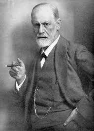
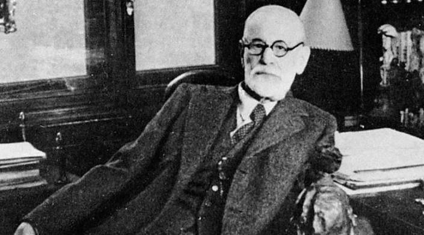
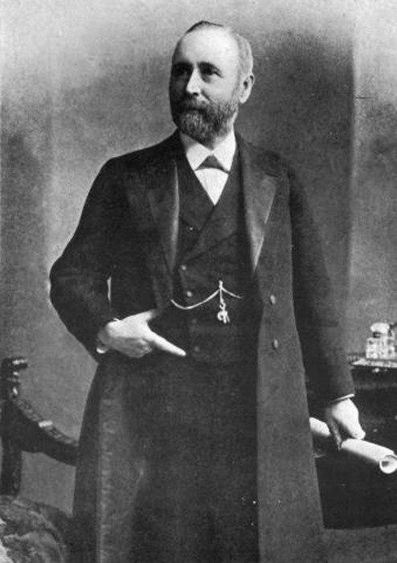

Зи́гмунд Фрейд (правильная транскрипция — Фройд; так как нем. Sigmund Freud, немецкое произношение: [ˈziːkmʊnt ˈfʁɔʏt]; полное имя Сигизму́нд Шло́мо Фрейд, нем. Sigismund Schlomo Freud; 6 мая 1856, Фрайберг, Австрийская империя — 23 сентября 1939, Лондон) — австрийский психолог, психоаналитик, психиатр и невролог.
Зигмунд Фрейд наиболее известен как основатель психоанализа, который оказал значительное влияние на психологию, медицину, социологию, антропологию, литературу и искусство XX века. Воззрения Фрейда на природу человека были новаторскими для его времени и на протяжении всей жизни психолога не прекращали вызывать резонанс и критику в научном сообществе. Интерес к теориям учёного не угасает и по сей день.
Среди достижений Фрейда наиболее важными являются разработка трёхкомпонентной структурной модели психики (состоящая из «Оно», «Я» и «Сверх-Я»), выделение специфических фаз психосексуального развития личности, создание теории эдипова комплекса, обнаружение функционирующих в психике защитных механизмов, психологизация понятия «бессознательное», открытие переноса и контр-переноса, а также разработка таких терапевтических методик, как метод свободных ассоциаций и толкование сновидений.
Несмотря на то, что влияние идей и личности Фрейда на психологию неоспоримо, многие исследователи считают его труды интеллектуальным шарлатанством. Практически каждый фундаментальный для фрейдовской теории постулат был подвергнут критике со стороны видных учёных и писателей, таких как Карл Ясперс, Эрих Фромм, Альберт Эллис, Карл Краус и многих других. Эмпирический базис теории Фрейда называли «неадекватным» Фредерик Крюс и Адольф Грюнбаум, «мошенничеством» психоанализ окрестил Питер Медавар, псевдонаучной теорию Фрейда считал Карл Поппер, что не помешало, однако, выдающемуся австрийскому психиатру и психотерапевту, директору Венской неврологической клиники Виктору Франклу в своём фундаментальном труде «Теория и терапия неврозов» признать: «И всё же, как мне кажется, психоанализ будет фундаментом и для психотерапии будущего. Поэтому вклад, внесённый Фрейдом в создание психотерапии, не теряет своей ценности, и сделанное им ни с чем не сравнимо».
За свою жизнь Фрейд написал и опубликовал огромное количество научных работ — полное собрание его сочинений составляет 24 тома. Он имел звания доктора медицины, профессора, почётного доктора права Университета Кларка и являлся иностранным членом Лондонского королевского общества, обладателем премии Гёте, являлся почётным членом Американской психоаналитической ассоциации, Французского психоаналитического общества и Британского психологического общества. Не только о психоанализе, но и о самом учёном выпущено множество биографических книг. Каждый год о Фрейде издаётся больше работ, чем о любом другом теоретике психологии.
Уильям Джеймс (в старых изданиях тж. Джемс, англ. William James; 11 января 1842, Нью-Йорк — 26 августа 1910, Чокоруа, округ Кэрролл) — американский философ и психолог, один из основателей и ведущий представитель прагматизма и функционализма. Авторами учебных пособий и научных работ часто называется отцом современной психологии. Старший брат писателя Генри Джеймса.
С точки зрения Джеймса, сознание является функцией, которая «по всей вероятности, как и другие биологические функции, развивалась потому, что она полезна». Исходя из такого приспособительного характера сознания он отводил важную роль инстинктам и эмоциям, а также индивидуальным физиологическим особенностям человека. Широкое распространение получила выдвинутая в 1884 г. теория эмоций Джеймса. Теория личности, развитая им в одной из глав «Психологии», оказала значительное влияние на формирование персонологии в США.
Для Джеймса ценность религии заключалась в способности помочь людям обрести позитивное и уверенное отношение к жизни. По мнению ученого, религия способствует утверждению у человека верных представлений о самом себе и окружающих условиях для того, чтобы люди не стали жертвой несовершенства жизни и общества
Курт Ца́дек Леви́н (нем. Kurt Zadek Lewin; 9 сентября 1890 — 12 февраля 1947) — немецкий, а затем американский психолог, чьи идеи оказали большое влияние на американскую социальную психологию и многие другие школы и направления, в особенности на теорию культурного развития Льва Выготского и исследователей «круга Выготского». Многие вопросы, которыми он занимался, стали основополагающими для психологов — уровень притязаний, групповая динамика, социальная перцепция, игровые ситуации, стремление к успеху и избегание неудач, теория поля, временная перспектива.
Теорию поля Курт Левин разработал в русле гештальтпсихологии. Понятие «поля» в данной теории обозначается как «тотальность сосуществующих фактов, которые мыслятся как взаимозависимые». Человек, писал К. Левин, живёт и развивается в «психологическом поле» окружающих его предметов. Каждый предмет имеет для человека свою валентность — своего рода энергетический заряд, вызывающий у человека специфическое напряжение, требующее разрядки. Поведение человека делится на волевое и полевое. Волевое — вызвано внутренними потребностями и мотивами, а полевое — влиянием внешних объектов.
Вот описание эксперимента, показывающего, как выглядит наиболее яркое полевое поведение, не зависящее от внутреннего мира человека.
Испытуемого, которого пригласили якобы с целью исследования его «интеллекта» или «памяти», просили минуточку подождать. «Я забыл, что мне необходимо позвонить», — говорил экспериментатор, выходил из комнаты, а сам наблюдал (через зеркало Гезелла) за тем, что будет делать испытуемый, оставшись один. Все без исключения испытуемые (а это были не только студенты, но и сотрудники берлинского института психологии — профессора, доценты) производили какие-то манипуляции с предметами: некоторые перелистывали книгу, трогали «шкафчик», проводя пальцем по бисерной занавеске; все без исключения позванивали колокольчиком.
В теории поля Левин пытался применить топологию для создания геометрии психологического описания поведения человека — годологии.